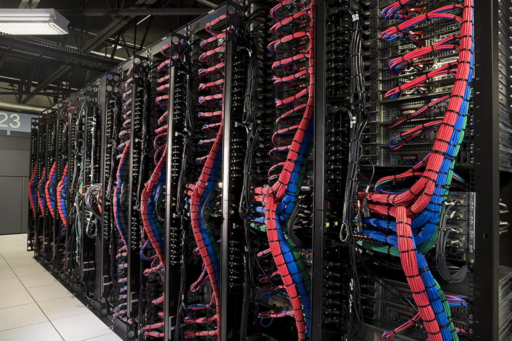

<div class="four columns">
    </img>
</div>
<div class="eight columns">
    <p>I generally build server software. I am also good with server class hardware.</p>
    <p>Usually my tools are:</p>
    <div class="container">
        <div class="row">
            <i class="fa icon-java fa-2x"></i>
            <i class="fa icon-tomcat fa-2x"></i>
            <i class="fa icon-redhat fa-2x"></i>
            <i class="fa icon-solaris fa-2x"></i>
            <i class="fa icon-python fa-2x"></i>
            <i class="fa icon-oracle fa-2x"></i>
            <i class="fa icon-mysql fa-2x"></i>
            <i class="fa icon-redis fa-2x"></i>
            <i class="fa icon-script fa-2x"></i>
            <i class="fa icon-c fa-2x"></i>
        </div>
    </div>
</div>